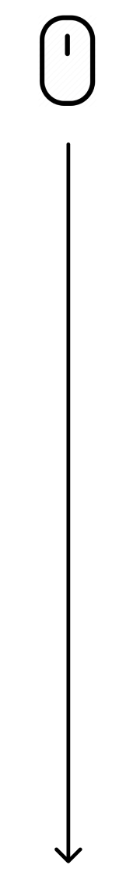

Cacaphony
to
Symphony
Based on existing research of the negative impacts of noise in NYC, as well as positive cognitive benefits of ambient sound: How do we regulate noise in New York City through an emergent system to ultimately promote wellbeing?
Coffee Shop: (decibel amount)
Distant Traffic: (decibel amount)
Nearby Construction: (decibel amount)